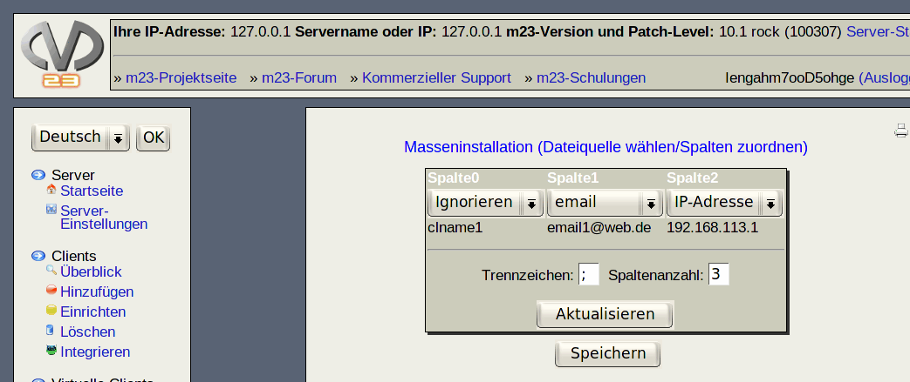

Nächste Seite:
Datei auswählen und hochladen
Aufwärts:
Masseninstallation
Vorherige Seite:
Es stehen 3 Methoden
Inhalt
Dateiquelle wählen/Spalten zuordnen

Dieser Dialog ist in zwei Schritte aufgeteilt:
Datei auswählen und hochladen
Den Feldern in der Datei die Client-Eigenschaften zuweisen
Unterabschnitte
Datei auswählen und hochladen
Hinweis
Den Feldern in der Datei die Client-Eigenschaften zuweisen
Gehen Sie hierzu wie folgt vor
root 2018-05-08